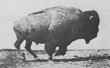

1 Introduction(s)
1.1 … to the Course
Movement is an ubiquitous and fundamental property of all biological organisms. In this course/book, we will learn to model and analyze spatial patterns and animal movement data. Starting with a strong statistical foundation on time-series and spatial processes, we will cover topics such as point patterns, migration, dispersal, home-ranging, behavioral change point analysis, multi-state modeling, continuous-time movement models, and perhaps touch on cutting edge topics like cognitive movement ecology and collective movements. The overarching goal will be to match mathematical models, statistical techniques and computational tools to ecologically meaningful questions. Conceptual and theoretical lectures will be combined with practical work in R, including developing novel Bayesian MCMC tools in STAN. The course will culminate with student-led research projects involving some non-trivial analysis of spatial data.
The structure of the class will be somewhat improvised. But there will be a combination of lectures and labs, and perhaps some guest lecturers on special topics. There will be weekly homework assignments and a final project that involves a novel, non-trivial analysis to be worked on and presented at the end of the semester.
All materials will be on this course website and integrated into the document-style lecture materials.
Thus, for example, assignments will be posted at this link: Assignments.
1.2 …to the Book
Collecting movement data is one of the main tools of wildlife ecologists, whether via satellite, GPS, GSM, acoustic, terrestrial, marine, freshwater, avian. Technologies are constantly improving, datasets are increasing at dizzying rates [refs]. Following in the swirling wake (and occasionally flashing ahead) of this data tsunami is a colorful and confounding array of methodological tools. To some extent, this is to be expected, since every tool is designed to address a particular kind of ecological or behavioral question and, at least in development, most tools are also designed around particular systems and particularities of the data collected. An extensive and influential branch of movement analysis, for example, was built around analyzing movements of marine organisms (e.g. sea turtles) from extremely gappy and notoriously error-ridden (but remarkable for the time) ARGOS data (Jonsen, Myers, and Flemming 2003, 2005). But the questions marine researchers were asking (e.g. can we adequately infer where the animal is at all from gappy and error-ridden data?) are profoundly different from the questions asked in a terrestrial contexts, where the question might be how are movement behaviors changing in a particular habitat? (Morales et al. 2004; Forester et al. 2007).
Movement ecology - at this point - is no longer such a young field1. There is a dedicated journal, thousands of papers reporting on some (non-trivial) analysis of animal movement data, hundred(s?) just introducing and developing methodological tools, dozen(s) of R packages with which to implement those tools, and so on. But - remarkably - there are very few single “go-to” sources for students or practitioners to refer to in starting out in analysis.
1 Set aside the fact that Aristotle discussed the migration of birds in his Historia Animalium 2500 years ago, much less the recent suggestion that the quantitative observation of animal migrations possibly predates written language(Bacon et al. 2023).
Certainly, two books are worth mentioning: Peter Turchin’s Quantitative Analysis of Movement (Turchin 1998) is a “seminal” text with much to offer, but not particularly useful in a modern context. Only fairly recently have there been a book-length synthesis of some of the statistical models for animal movement data by several outstanding statistical (movement) ecologists in Hooten, Johnson, McClintock and Morales’ Animal Movement: Statistical Models for Telemetry Data (Hooten et al. 2017). While this text is an absolutely essential compendium of the main developments in movement modeling in the past two decades, it can be technically daunting for students or practitioners without strong statistical training. Also - in what is clearly the correct decision for a statistical, printed text that should stand the test of time - it provides many equations and figures, but no R code.

The goals of this eventual book are to provide a rigorous, comprehensive, and somewhat less technical, but highly visual and example-driven guide through working with spatial and movement data and understanding some of the most important tools and techniques for interpreting and analyzing those data.

Eadweard Muybridge demonstrated that bison move